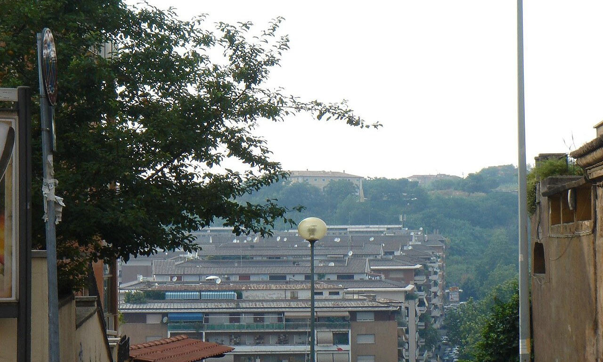

Vatican Museums Free Entry: Last Sunday of the Month

The Vatican Museums are free for everyone on the last Sunday of each month, open from 9:00 am to 2:00 pm with the last entry at 12:30 pm. You cannot book a free ticket or skip the line, it is walk-in only, so the queue is long and you should arrive by around 7:00 am. Children under 6 get in free any day. The free Sunday is cancelled when it falls on Easter, 29 June, or the Christmas period, but in 2026 all 12 go ahead. It saves you the ticket price but costs you hours in line, so it suits patient, budget travellers more than first-timers on a tight schedule.
The free last Sunday is the one regular day you can visit the Vatican Museums without paying, and it is exactly the kind of deal that sounds better than it is.
You save the price of a ticket, but you trade it for a long early-morning queue and a shorter, busier visit. Whether that is a good swap depends entirely on your budget and your patience.
This guide gives you the facts: the hours, the 2026 dates, how early to line up, which Sundays are skipped, and an honest take on whether to bother or just book a ticket on a quieter day.
📋 In This Guide
🎟 Top Vatican Tickets & Tours
When the Vatican Museums Are Free
The Vatican Museums are free to enter for everyone on the last Sunday of each month, from 9:00 am to 2:00 pm, with last admission at 12:30 pm and the halls clearing from about 1:30 pm. That is the only regular free day. On every other Sunday the museums are closed altogether.
Two things are free more often than that. Children under 6 get in free any day of the week, and ICOM card holders also enter free. Beyond those, there is no regular discount day, so last Sunday is the one to plan around if a free visit is your goal. For the normal prices the rest of the time, see our Vatican ticket prices guide.
Free Sunday Dates in 2026
Here are all the free Sundays for 2026. All twelve go ahead this year, as none clashes with an excluded holiday.
- 25 January
- 22 February
- 29 March
- 26 April
- 31 May
- 28 June
- 26 July
- 30 August
- 27 September
- 25 October
- 29 November
- 27 December
Note that the Vatican Gardens, the Necropolis, and Castel Gandolfo are closed on Sundays, so they are not open on the free day. Only the main Museums and the Sistine Chapel are.
What to Expect: Queues and Crowds
This is the catch, and it is a big one. Because you cannot pre-book or buy a skip-the-line ticket for the free Sunday, everyone joins one walk-up queue along Viale Vaticano, and it starts forming before the doors open.
In spring and summer the wait can run two to four hours, and the line builds well before the 9:00 am opening.
Roughly, the earlier you arrive, the better your odds:
- Before 7:00 am: A wait of under an hour, and you are almost certain to get in before the 12:30 cut-off.
- 7:00 to 8:00 am: Around one to two hours.
- After 9:00 am: Two to four hours, and a real risk of not reaching the entrance before 12:30.
Inside, it is the busiest the museums get, and the Sistine Chapel is packed. If you are not near the entrance by midday, you may not make it in at all.
Is the Free Sunday Worth It?
Here is the honest math. The free Sunday saves you the ticket price, which is €25 online or €20 at the door, but it costs you a long queue, no guarantee of getting in, and a shorter, more crowded visit. For most first-time visitors, that is not a good trade.
It is worth it if you are on a tight budget, have time and patience, and can be at the entrance by 7:00 am, and if you would be relaxed about missing out if the queue is too long.
It is not worth it if your dates are fixed, you are visiting with children, you only have half a day, or you simply want a calm look at the art. In those cases a pre-booked skip-the-line entry ticket on a quieter day is the better use of your time, and our best time to visit guide shows when those are.
Tips for the Free Sunday
If you decide to go, these make it less painful:
- Arrive by 6:30 to 7:00 am - Later than that and you risk a long wait or missing the cut-off.
- Travel light - Everyone goes through security, and big bags slow you down and must go in the cloakroom.
- Bring water and a snack - You will be queuing a while, and it is a long walk once inside, around 5 km.
- Wear comfortable shoes and dress for the code, with shoulders and knees covered.
- Have a plan B - If the queue is hopeless, St. Peter's Basilica is free to enter any day, so you can switch to that. Our St. Peter's Basilica tickets guide covers it.
When the Free Sunday Does Not Run
The free Sunday is cancelled when the last Sunday of the month lands on one of a few holidays: Easter Sunday, 29 June (Saints Peter and Paul), 25 or 26 December, and 31 December. In those years the museums follow their holiday schedule instead.
In 2026 none of the last Sundays falls on one of these dates, so every free Sunday listed above goes ahead as normal. It is still worth checking the official calendar close to your trip, as schedules can change.
Frequently Asked Questions
Is the Vatican Museum free?
It is free for everyone on the last Sunday of each month, from 9:00 am to 2:00 pm, with the last entry at 12:30 pm. The rest of the time it is a paid ticket. Children under 6 are free any day.
Can I book a free ticket for the Vatican on Sunday?
No. The free Sunday is walk-in only, with no online booking and no skip-the-line, so everyone queues. If you want a guaranteed time and a short wait, book a paid ticket on another day instead.
What time should I arrive on the free Sunday?
By around 6:30 to 7:00 am. The queue forms before the 9:00 am opening, and arriving later can mean a two to four hour wait or missing the 12:30 entry cut-off.
What are the Vatican free Sunday dates in 2026?
25 January, 22 February, 29 March, 26 April, 31 May, 28 June, 26 July, 30 August, 27 September, 25 October, 29 November, and 27 December. All twelve run this year.
Does the free Sunday include the Sistine Chapel?
Yes. The Sistine Chapel is part of the Vatican Museums, so it is included on the free day. The Vatican Gardens, Necropolis, and Castel Gandolfo are closed on Sundays, so they are not.
Is the free Sunday worth it?
For patient, budget travellers who can arrive by 7:00 am, it can be. For first-timers, families, or anyone on a tight schedule, the long queue and crowds outweigh the savings, and a paid ticket on a quieter day is better value for the time.
Related Vatican Visitor Guides